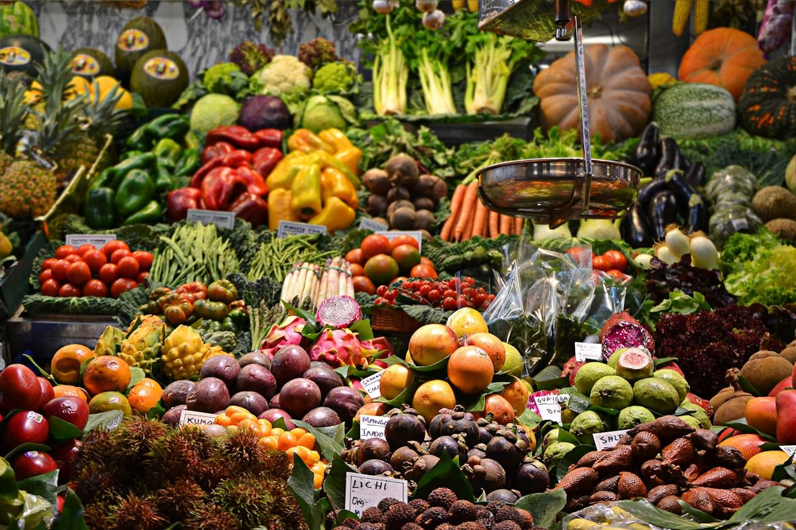
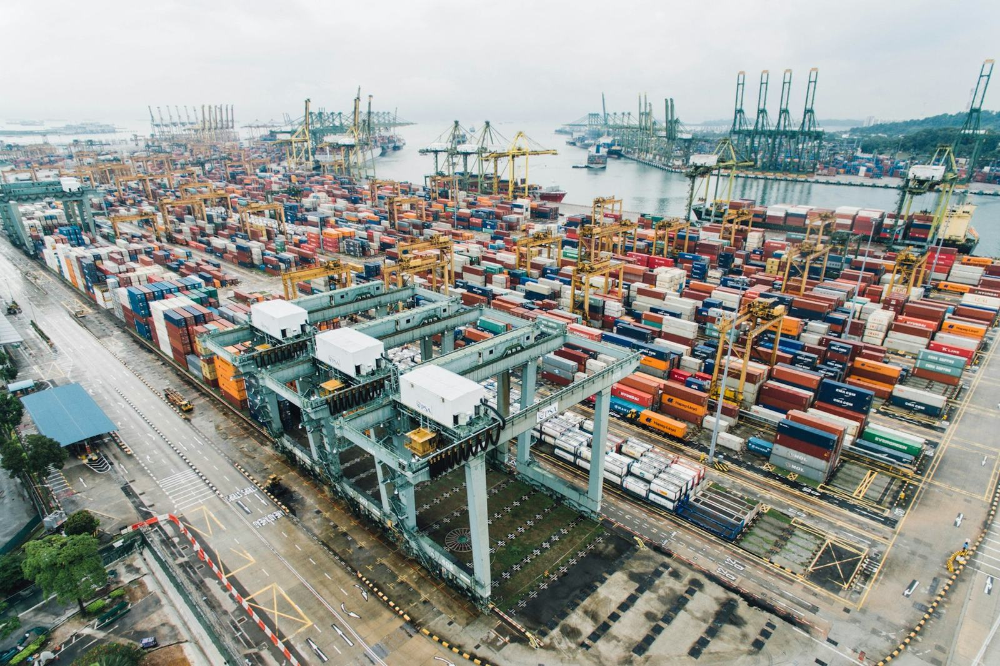

Walson Nutrifoods
Sustainable farming practices and efficient distribution ensuring freshness, quality and reliability.
Explore farming →
About Walson Group
From sustainable farms and modern agri-clusters to advanced processing, gourmet retail and global exports — we connect every link between the farmer's field and the world's table.
Our Businesses
Each division owns a part of the journey — together they deliver end-to-end capability from farming to global markets.
Sustainable farming practices and efficient distribution ensuring freshness, quality and reliability.
Explore farming →Processing agro produce through canning, dehydration and frozen procedures — ensuring safety, nutrition and long shelf life.
Explore processing →Building agri-clusters and providing end-to-end processing solutions for superior quality and traceability.
Bringing the finest range of gourmet, healthy and wholesome products to your table.
Delivering trusted Indian agri products to global markets, along with specialty food items and non-food items like vermicompost and sustainable products.
A single, integrated partner covering the full spectrum — so quality and traceability are never handed off or lost in between.
Work with us →Our Strength
Rigorous quality checks at every stage to ensure safety and consistency.
Environment-friendly operations for a better and greener tomorrow.
End-to-end capability from farming to global markets with advanced infrastructure.
A strong export network delivering Indian quality to the world.
Lasting relationships built through trust, reliability and service excellence.
Continuously innovating products and processes to create better solutions.
Committed to ethical business and social responsibility.
Food technologists and R&D driving safe, nutritious innovation.
Processing Units
Located close to India's most productive agricultural belts for freshness, efficiency and reach.
📍 Maharashtra
📍 Karnataka
📍 Maharashtra

Let's work together
From sourcing fresh produce to processed foods built to spec and global export — talk to us about your requirement.
Get in touch